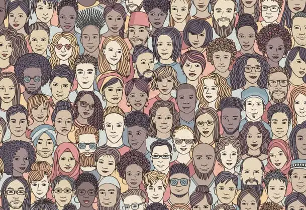

Forget “1 in a million.” Did you know that you and every human being who has ever existed represents a “1 in 500 million” treasure?

It’s true. The sperm that reached your mother’s ovum to create you traveled with about that many others, and only that one, in 500,000,000, made the cut, while the other 499,999,999 fell into oblivion.
God knew just which one would be the victor. He was there, every moment of that journey, waiting with anticipation. He couldn’t wait for you to become; to be. And when that magical moment happened, he smiled, pleased with what would come forth, delighted in his creation: in you.
That was one of the biggest takeaways from the “Made for More” event that took place at Sts. Anne & Joachim in November. Though it’s been a couple months now, revisiting that perspective of the odds of how you and I came to be here has stayed with me in a marked way.
During that evening’s gathering with Christopher West, expert in St. Pope John Paul II’s Theology of the Body, I couldn’t miss the connection with abortion and what we sidewalk advocates are about when we pray weekly at the local abortion facility.
West called upon a volunteer at the beginning of his presentation—a young man who was brave enough to come to the front of the church. He would represent that “1 in 500 million” the rest of the evening. Connecting scientific stats to a real human we could gaze upon made the points real. If not for that one tenacious sperm, this young man wouldn’t exist. And if any person in his family line had been aborted, at any point, God’s thoughtfully planned masterpiece would never have manifest.
The odds of you and I existing are exponentially slim, and we will never pass this way again. That is why, West pointed out, rejection hurts so much. We are unrepeatable and irreplaceable. Discarding such a rare jewel can never be approached casually.
If this is true of you and me, it is also true of every human being we will ever encounter and have the privilege—yes, the privilege—to know. This includes the stranger on the street. When we peer into this reality, every person with whom we cross paths, for however long, makes a tremendous impact on us, even if we barely notice them.
If this is true of the people we know and love along with the stranger in Wal-Mart, it’s also true of the millions of human beings that have been aborted, and whom we will never meet—at least this side of heaven. Their earthly lives did not have a chance to unfold. That is a grave and unfortunate reality. They will never pass this way again, ever.
That is why post-abortive trauma is a thing; why women and men who’ve lost babies in any manner, but especially this one, once they recognize that loss, grieve deeply.
Even we who have experienced miscarriage can understand this, though the grief is likely not as tenacious in natural loss. Nevertheless, after we lost Gabriel in May 1999, I recall hearing, “You can have another.” Though well-meaning, it hurt, and I now understand why. Inside, I heard myself saying, “Maybe, but not this one.” We are irreplaceable.
If we are left only with this life, that one, unique life is truly over, descending into the dark abyss. But if God is real and his promises true, our paths might cross again if we believe in and choose him. Which is why post-abortive women and men who return to Jesus begin to have hope again.
This statistic of 1 in every 500 million is why we stand at the sidewalk on abortion day, Wednesday for our local abortion facility. It’s why we try our best to talk to the potential clients, to let them know there are other choices than abortion.
Those choices won’t take away an entire branch of irreplaceable people in a family tree; those choices will not leave us groping with regret for the 1 in 500 million we won’t get to love in this life; those choices will heal our wounds and help us find true and lasting freedom.
Let’s not forget this statistic as we go about our day, meeting others who are only here because of a 1 in 500 million chance; these one-and-only unique persons God had in his mind from the beginning of the world.
[Note: I write about my experiences praying for the end to abortion at the sidewalk abutting the Red River Valley’s lone abortion facility for New Earth magazine — the official news publication of the Fargo Diocese. I hope you find “Sidewalk Stories” helpful in understanding the truth about abortion and how it plays out tragically in our corner of the world. The preceding ran in New Earth’s January 2024 issue.]